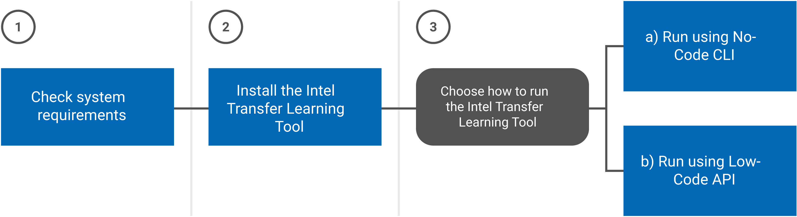

Get Started¶
This is a guide for getting started with Intel® Transfer Learning Tool and will walk you through the steps to check system requirements, install, and then run the tool with a couple of examples showing no-code CLI and low-code API approaches.

① Check System Requirements¶
Recommended Hardware |
Precision |
|---|---|
Intel® 4th Gen Xeon® Scalable Performance processors |
BF16 |
Intel® 1st, 2nd, 3rd, and 4th Gen Xeon® Scalable Performance processors |
FP32 |
Required Software |
|---|
Linux* system (validated on Ubuntu* 20.04/22.04 LTS) |
Python (3.8, 3.9, or 3.10) |
Pip |
Conda or Python virtualenv |
git (only required for advanced installation) |
② Install¶
Install Dependencies
Install required packages using:
apt-get install build-essential python3-dev libgl1 libglib2.0-0
Create and activate a Python3 virtual environment
We encourage you to use a Python virtual environment (virtualenv or conda) for consistent package management. There are two ways to do this:
a. Use
virtualenv:virtualenv -p python3 tlt_dev_venv source tlt_dev_venv/bin/activate
b. Or use
conda:conda create --name tlt_dev_venv python=3.9 conda activate tlt_dev_venv
Install Intel Transfer Learning Tool
Use the Basic Installation instructions unless you plan on making code changes.
a. Basic Installation
pip install intel-transfer-learning-tool
b. Advanced Installation
Clone the repo:
git clone https://github.com/IntelAI/transfer-learning.git cd transfer-learning
Then either do an editable install to avoid a rebuild and install after each code change (preferred):
pip install --editable .
or build and install a wheel:
python setup.py bdist_wheel pip install dist/intel_transfer_learning_tool-0.4.0-py3-none-any.whl
Additional Feature-Specific Steps
For distributed/multinode training, follow these additional distributed training instructions.
For TensorFlow text classification, install this additional Python library:
pip install tensorflow-text==2.11.0
Verify Installation
Verify that your installation was successful by using the following command, which displays help information about the Intel Transfer Learning Tool:
tlt --help
Prepare the Dataset
The Intel Transfer Learning Tool can use datasets from existing dataset catalogs or custom datasets that you have on your machine. The following CLI and API examples use the Intel Transfer Learning Tool’s custom dataset option (
--dataset-dir) with the TensorFlow flowers dataset.Download the flowers dataset from https://storage.googleapis.com/download.tensorflow.org/example_images/flower_photos.tgz and extract the files to a folder on your machine.
wget https://storage.googleapis.com/download.tensorflow.org/example_images/flower_photos.tgz tar -xvzf flow_photos.tgz
After extracting the dataset, you should have a
flower_photosfolder with subfolders fordaisy,dandelion,roses,sunflower, andtulips.
③ Run the Intel Transfer Learning Tool¶
With the Intel Transfer Learning Tool, you can train AI models with TensorFlow or PyTorch using either no-code CLI commands at a bash prompt, or low-code API calls from a Python script. Both approaches provide the same opportunities for training, evaluation, optimization, and benchmarking. With the CLI, no programming experience is required, and you’ll need basic Python knowledge to use the API. Choose the approach that works best for you.
Run Using the No-Code CLI¶
Follow an example below, or construct your own command. Use tlt --help to see
a summary of available CLI commands. See more detailed information on any
command by using tlt <command> --help (for example, tlt train --help).
List Available Options
Show all available framework, use cases, or models with the tlt list command,
for example:
tlt list models --use-case image_classification
------------------------------
IMAGE CLASSIFICATION
------------------------------
alexnet (pytorch)
convnext_base (pytorch)
convnext_large (pytorch)
convnext_small (pytorch)
convnext_tiny (pytorch)
densenet121 (pytorch)
densenet161 (pytorch)
densenet169 (pytorch)
densenet201 (pytorch)
efficientnet_b0 (pytorch)
efficientnet_b0 (tensorflow)
efficientnet_b1 (pytorch)
efficientnet_b1 (tensorflow)
...
See the full list of supported models.
Train a Model
This example uses the CLI to train an image classifier to identify different types of flowers.
Make sure to specify your own file paths for dataset-dir and output-dir. The dataset-dir should
point to the flowers dataset you prepared in an earlier step. For more information on using different
datasets, see the CLI examples.
tlt train -f tensorflow --model-name resnet_v1_50 --dataset-dir /tmp/dataset/flower_photos --output-dir /tmp/output
Model name: resnet_v1_50
Framework: tensorflow
Dataset name: tf_flowers
Training epochs: 1
Dataset dir: /tmp/dataset/flower_photos
Output directory: /tmp/output
Found 3670 files belonging to 5 classes.
...
Saved model directory: /tmp/output/resnet_v1_50/1
After training completes, the model is exported to the output directory specified in your command. The actual directory name is printed out to the console. A numbered folder is created for each training run.
Next Steps
The training command also evalutes the trained model and prints out accuracy and
loss metrics. Evaluation can also be called separately using tlt eval. The
trained model can also be benchmarked using tlt benchmark or quantized using
tlt quantize. See the CLI documentation for more
examples using the CLI or the CLI reference.
Run Using the Low-Code API¶
The following example trains an image classification model with the TensorFlow flowers dataset using the API calls from Python. Additionally, the model is benchmarked and quantized to INT8 precision for improved inference performance. You can run the API using a Jupyter notebook. See the notebook setup instructions.
from tlt.datasets import dataset_factory
from tlt.models import model_factory
from tlt.utils.types import FrameworkType, UseCaseType
import os
# Specify the directory where the TensorFlow flowers dataset has been downloaded and extracted
# (https://storage.googleapis.com/download.tensorflow.org/example_images/flower_photos.tgz)
dataset_dir = os.environ["DATASET_DIR"] if "DATASET_DIR" in os.environ else \
os.path.join(os.environ["HOME"], "dataset")
# Specify a directory for output
output_dir = os.environ["OUTPUT_DIR"] if "OUTPUT_DIR" in os.environ else \
os.path.join(os.environ["HOME"], "output")
# Get the model
model = model_factory.get_model(model_name="resnet_v1_50", framework=FrameworkType.TENSORFLOW)
# Load and preprocess a dataset
dataset = dataset_factory.load_dataset(dataset_dir = os.path.join(dataset_dir, "flower_photos"),
use_case=UseCaseType.IMAGE_CLASSIFICATION, \
framework=FrameworkType.TENSORFLOW)
dataset.preprocess(image_size=model.image_size, batch_size=32)
dataset.shuffle_split(train_pct=.75, val_pct=.25)
# Train the model using the dataset
model.train(dataset, output_dir=output_dir, epochs=1)
# Evaluate the trained model
metrics = model.evaluate(dataset)
for metric_name, metric_value in zip(model._model.metrics_names, metrics):
print("{}: {}".format(metric_name, metric_value))
# Export the model
saved_model_dir = model.export(output_dir=output_dir)
# Create an Intel Neural Compressor config file
inc_config_file = os.path.join(output_dir, "inc_config.yaml")
model.write_inc_config_file(inc_config_file, dataset=dataset, batch_size=512, overwrite=True,
accuracy_criterion_relative=0.01, exit_policy_timeout=0,
exit_policy_max_trials=10, tuning_workspace=os.path.join(output_dir, "nc_workspace"))
# Quantize the trained model
quantization_output = os.path.join(output_dir, "quantized_model")
model.quantize(quantization_output, inc_config_file)
# Benchmark the trained model using the Intel Neural Compressor config file
model.benchmark(quantization_output, inc_config_file, 'performance')
# Do graph optimization on the trained model
optimization_output = os.path.join(output_dir, "optimized_model")
model.optimize_graph(optimization_output)
For more information on the API see the API Documentation.
Summary and Next Steps¶
The Intel Transfer Learning Tool can be used to develop an AI model and export an Intel-optimized saved model for deployment. The sample CLI and API commands we’ve presented show how to execute end-to-end transfer learning workflows. For more details, check out these tutorial Jupyter notebooks, and real-world reference workflow examples:
Tutorial Jupyter Notebooks
Notebook |
Use Case |
Framework |
Description |
|---|---|---|---|
Text Classification with TensorFlow using the Intel® Transfer Learning Tool |
Text Classification |
TensorFlow and the Intel Transfer Learning Tool API |
Demonstrates how to use the Intel Transfer Learning Tool API to fine tune a BERT model from Hugging Face using binary text classification datasets. |
Text Classification with Pytorch using the Intel® Transfer Learning Tool |
Text Classification |
PyTorch and the Intel Transfer Learning Tool API |
Demonstrates how to use the Intel Transfer Learning Tool API to fine tune a BERT model from Hugging Face using binary text classification datasets. |
Image Classification with TensorFlow using Intel® Transfer Learning Tool |
Image Classification |
TensorFlow and the Intel Transfer Learning Tool API |
Demonstrates how to use the Intel Transfer Learning Tool API to do transfer learning for image classification using a TensorFlow model. |
Image Classification with PyTorch using Intel® Transfer Learning Tool |
Image Classification |
PyTorch and the Intel Transfer Learning Tool API |
Demonstrates how to use the Intel Transfer Learning Tool API to do transfer learning for image classification using a PyTorch model. |
Real-World Examples
Check out these Reference Kits and Workflows that use Intel Transfer Learning Tool:
Support¶
The Intel Transfer Learning Tool team tracks bugs and enhancement requests using GitHub issues. Before submitting a suggestion or bug report, search the existing GitHub issues to see if your issue has already been reported.
See Legal Information for Disclaimers, Trademark, and Licensing information.